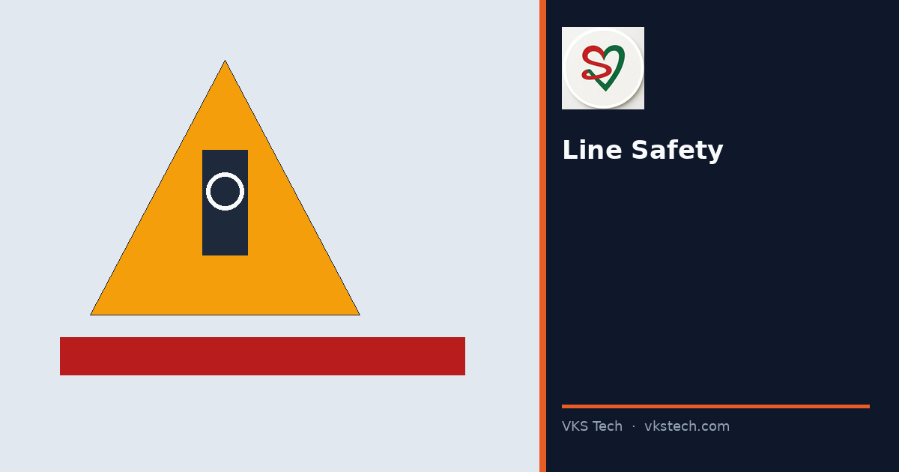

🛡️ Rewinders and Slitters Are High-Risk for Cuts, Entanglement and Crush Injuries. Guarding, Lockout and Operator Discipline Are Non-Negotiable
📖 11-min read · Safety · Operators + Supervisors + Maintenance
Slitters and rewinders combine rotating cores, sharp knives, high tension and fast-moving film. The injury potential is serious: cuts, entanglement, crush injuries and, in extreme cases, worse. Many incidents happen during threading, knife changes, cleaning or when someone reaches into a running machine “just for a second”. Safety on these machines is not a formality — it is a daily operating discipline.
- Guards must be in place and interlocks working — never bypassed
- Lockout / tagout before knife changes, cleaning or any entry into danger zones
- Threading and knife work only when the machine is at a safe state
- No loose clothing, jewellery or unsecured hair near rotating parts
- Report near-misses; they are free warnings
1. Main Hazard Zones
| Zone / Activity | Primary risks |
|---|---|
| Knife / blade area | Severe cuts during change or adjustment |
| Inrunning nips (rolls, cores) | Entanglement, crush |
| High-tension web | Sudden release, impact, cuts from broken film |
| Threading / splicing | Hands in danger zones while machine can still move |
| Core loading / unloading | Crush, strain, falling rolls |
2. Non-Negotiable Controls
- Guarding and interlocks — Guards closed and interlocks functional before the machine can run. Never defeat an interlock.
- Lockout / Tagout (LOTO) — Before any knife change, deep cleaning or work that puts hands in danger zones. Energy isolated and locked.
- Safe state for threading — Use the manufacturer’s safe procedures; do not thread at production speed or with guards open.
- PPE and clothing — Cut-resistant gloves where appropriate for knife work; no loose clothing or jewellery near rotating parts.
- Training and authorisation — Only trained and authorised people operate or change knives on these machines.
- Near-miss reporting — Every near-miss is investigated. Most serious incidents were preceded by ignored warnings.
3. Supervisor and Culture Role
If supervisors tolerate open guards, defeated interlocks or “quick” work without LOTO, the written rules mean nothing. Safety on slitters and rewinders is visible every shift: guards closed, LOTO used, people not reaching into running machines.
Make slitter/rewinder safety part of the daily start-up check and the shift handover. It is not a once-a-year training topic.
🛡️ रीवाइंडर और स्लिटर कट, उलझाव और क्रश चोटों के लिए उच्च जोखिम वाले हैं। गार्डिंग, लॉकआउट और ऑपरेटर अनुशासन गैर-परक्राम्य हैं
📖 11-मिनट पढ़ें · सुरक्षा · ऑपरेटर + सुपरवाइजर + मेंटेनेंस
स्लिटर और रीवाइंडर में घूमते कोर, तेज चाकू, उच्च टेंशन और तेज गति वाली फिल्म होती है। चोट की संभावना गंभीर है। कई घटनाएँ थ्रेडिंग, चाकू बदलते, सफाई करते या चलती मशीन में “बस एक सेकंड” हाथ डालने पर होती हैं। इन मशीनों पर सुरक्षा औपचारिकता नहीं — रोजाना का ऑपरेटिंग अनुशासन है।
- गार्ड जगह पर और इंटरलॉक काम कर रहे हों — कभी बायपास न करें
- चाकू बदलने, सफाई या खतरे के क्षेत्र में प्रवेश से पहले लॉकआउट/टैगआउट
- थ्रेडिंग और चाकू का काम केवल सुरक्षित अवस्था में
- घूमते भागों के पास ढीले कपड़े, आभूषण या खुले बाल नहीं